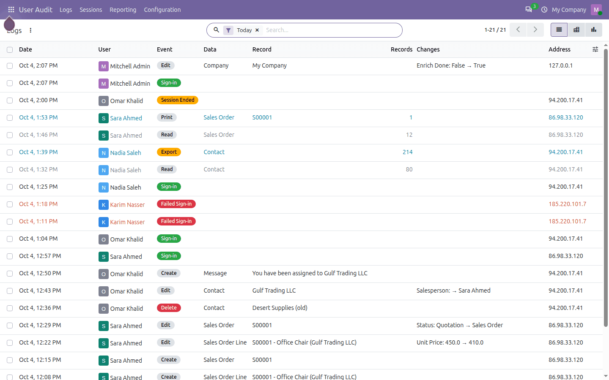
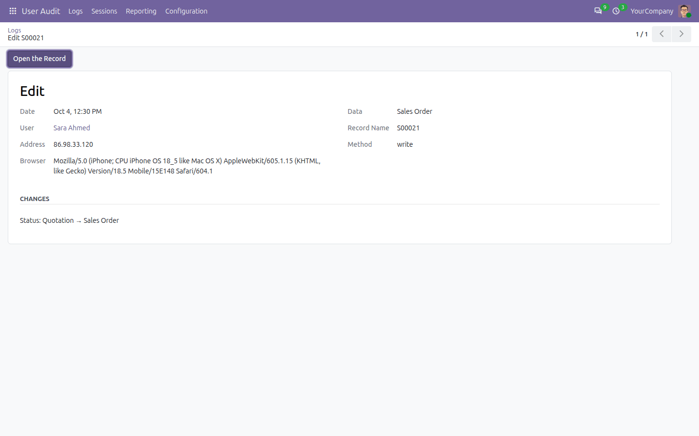
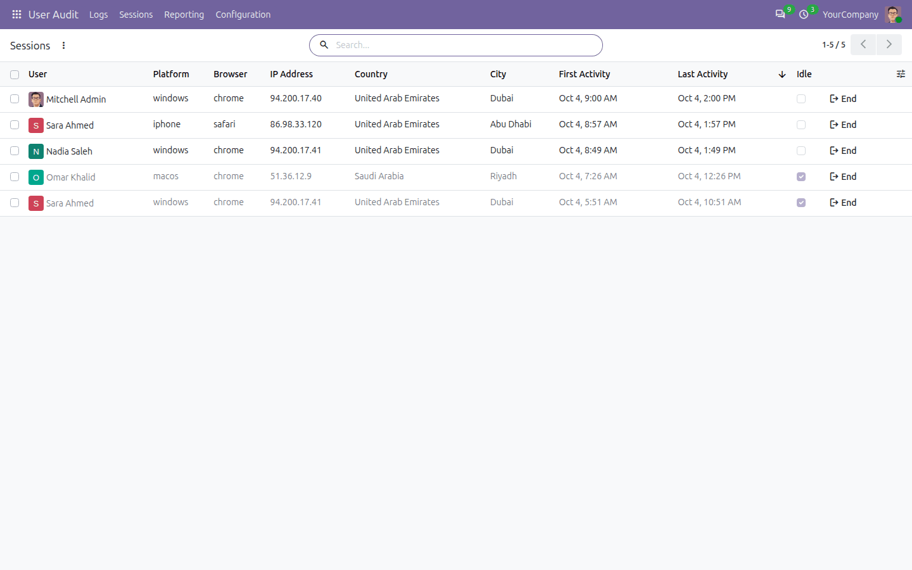
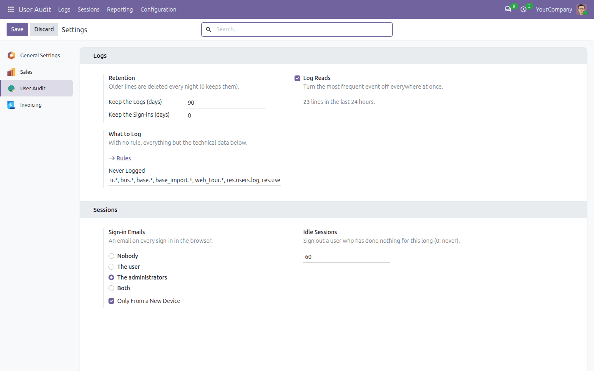
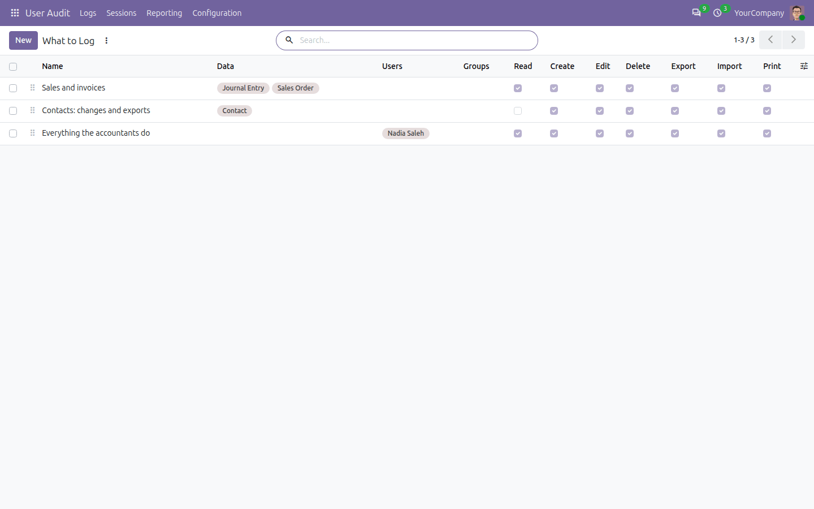
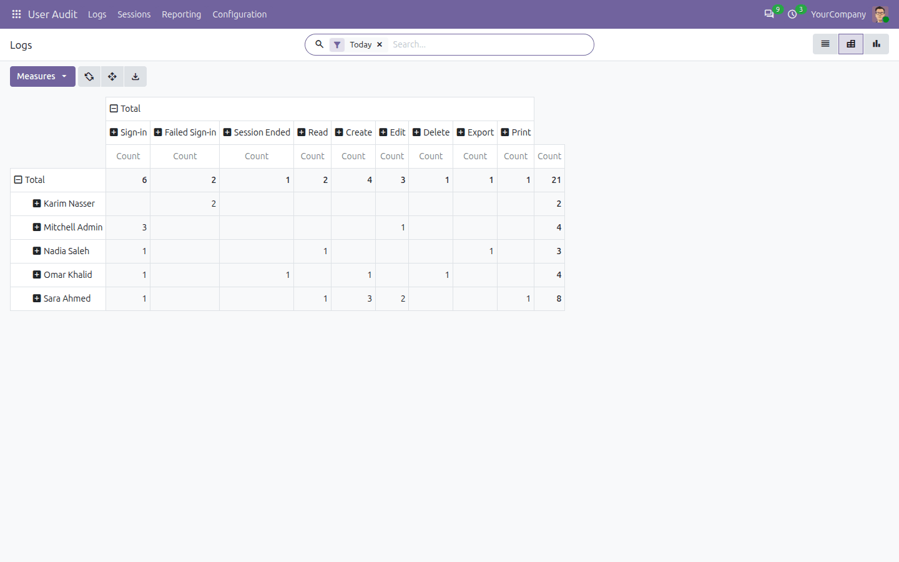
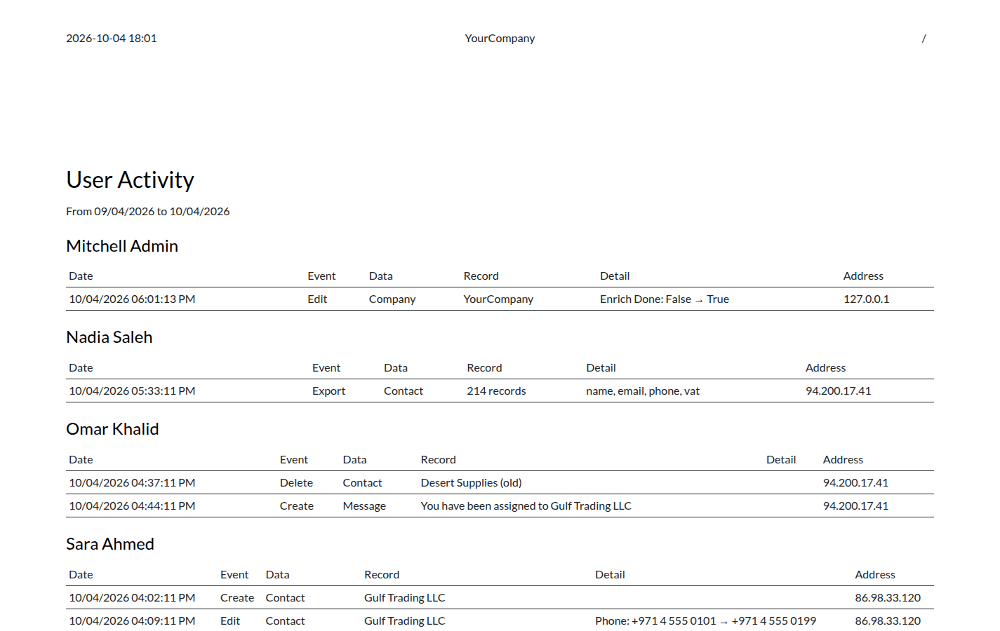

Who signed in, from where, and what they read, changed, exported, imported and printed, with the old and the new value of every change. Every open session of every user, and an End button on each. Installed and logging in one click: nothing to configure.
This app is published as a beta, and the first stable release will be shaped by what you tell us. Every feature is covered by automated tests; try it on a copy of your database first and watch how fast the logs grow.
Tell us what works, what does not and what you miss:
From the installation on, every operation of every user on your business data is logged, without any setting. Odoo's own work in the background is not: only what the users and their scripts do.
Today's lines first: sign-ins, failed sign-ins, reads, changes, exports, prints, ended sessions. Filter by user, data, event or day, group them, or open the record a line is about.

Failed sign-ins in red, exports in orange, changes with what changed.
Every edit keeps the old and the new value of each field that really changed, and who made it, when, from which address and browser.

A quotation confirmed by Sara, from her phone.
Who is signed in, on which device and browser, from which address and city, since when, and whether they are idle. End signs them out on their next request; End All Sessions on the user form signs them out everywhere.

Sessions idle for more than an hour are greyed.
How long the logs and the sign-ins are kept, whether reads are logged, what is never logged, who gets an email on each sign-in, and after how long an idle session ends.

The number of lines written in the last 24 hours tells how fast the log grows.
With no rule, everything is logged but the technical data. As soon as a rule exists, only what the rules name is: the sales and invoices, the changes and exports of the contacts, everything one accountant does.

Three rules: from now on, only what they name is logged.
The log in a pivot and a graph: events per user, per day, per data.

Events per user.
Pick the users, the period and the events: changes, exports, imports and prints, sign-ins, or everything.

The changes of the last 30 days, user by user.
The log is readable by the Settings users only.
Does it slow Odoo down?
Barely: the lines of a request are written once, when it ends, in one go. Reads can be turned off everywhere at once if you do not need them.
Does a cancelled change leave a line?
No: a change rolled back leaves nothing. A failed sign-in or a refusal is kept, written on its own.
Can users see the log?
No, only the Settings users. Each user still sees their own sessions in their preferences, as in standard Odoo.
How do I keep the log small?
Choose how long it is kept in Settings, turn the reads off, or add rules: only what they name is logged.
It is a beta: can I use it?
Yes, with the usual care: try it on a copy of your database first. Reviews, bug reports and ideas are welcome.